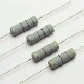

1.3.1. Резисторы
Резистор (от лат. resisto – сопротивляться) — структурный элемент электрической цепи, основной функциональным свойством которого является определённое (номинальное) активное сопротивление (R). Ток и напряжение в резисторе подчиняются закону Ома.
Резисторы – это компоненты, основным параметром которых выступает сопротивление. Промышленность для аппаратуры широкого потребления выпускает резисторы сопротивлением примерно от 0,1 Ом до 100 МОм и мощностью от 0,125 Вт до 100 Вт.
В соответствии с веществами, из которых изготавливают важнейшие части компонентов, выделяют группы металлофольговых, проволочных и непроволочных резисторов. Металлофольговые резисторы изготавливают на основе диэлектриков, на которые наносят фольговые покрытия, к которым подсоединяют выводы. Проволочные резисторы выполняют из проволоки с высоким удельным сопротивлением, материалом которой часто служит нихром, манганин, константан и подобные сплавы. Чтобы уменьшить габариты таких резисторов, проволоку обычно навивают на диэлектрический каркас, например, спиралью укладывают на керамический стержень. Паразитная индуктивность проволочных резисторов при указанном способе изготовления довольно велика. Непроволочные резисторы можно отнести к классам углеродистых, полупроводниковых, металлодиэлектрических или композитных компонентов.
Классификация резисторов
По назначению резисторы разделяются на две группы:
1. Общего назначения (диапазон сопротивлений от 1 Ом до 10 МОм; номинальные мощности рассеивания Рном– 0,062...100 Вт).
2. Специального назначения: высокоомные (10 МОм ...100 ТОм), Uраб – 100 ...400 В ((Uраб – рабочее (номинальное) напряжение);
- высоковольтные (R до 1011 Ом, Uраб до 100 кВ);
- высокочастотные (собственные емкость С и L индуктивность близки к нулю);
- прецизионные (повышенная точность, допуск не более 0,001 ...1 %, высокая стабильность, R = 0,1 ...10 МОм, Pном до 2 Вт).
По параметрам резисторы делятся на постоянные и переменные. Переменные разделяются на подстроенные и регулировочные резисторы.
Выделяются следующие функциональные виды резисторов:
- Постоянные резисторы – резисторы, обладающие неизменным сопротивлением (в границах погрешности).
- Переменные и подстроечные резисторы (реостаты) – резисторы сопротивление которых изменяется механически, посредством рукоятки или другого органа управления (переменные), либо посредством вставляемого в шлиц инструмента.
- Варисторы – резисторы, сопротивление которых зависит от приложенного напряжения.
- Терморезисторы и термисторы – резисторы, у которых используется зависимость сопротивления от температуры, с положительным (терморезисторы) или отрицательным (термисторы) ТКС –температурным коэффициентом сопротивления.
- Фоторезисторы – резисторы, обладающие зависимостью сопротивления от освещения.
Как правило, резисторы имеют два вывода, однако переменные и подстроечные резисторы имеют также отвод от бегунка регулятора а также могут иметь серию отводов из средней части. У постоянных резисторов сопротивление должно быть неизменно. У подстроечных резисторов его можно некоторое число раз отрегулировать, после чего наступит физический износ деталей. У переменных резисторов его можно изменять много раз.
Условные обозначения резисторов на схемах
б) переменные;
в) переменный с дополнительными отводами;
г) подстроечные;
д), е) переменные с общей ручкой;
ж) переменный с выключателем от крайнего положения;
з) варистор;
и) терморезистор;
к) фоторезистор.